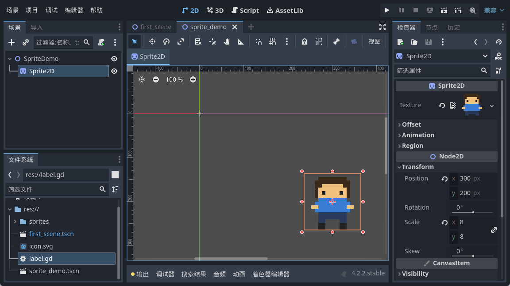
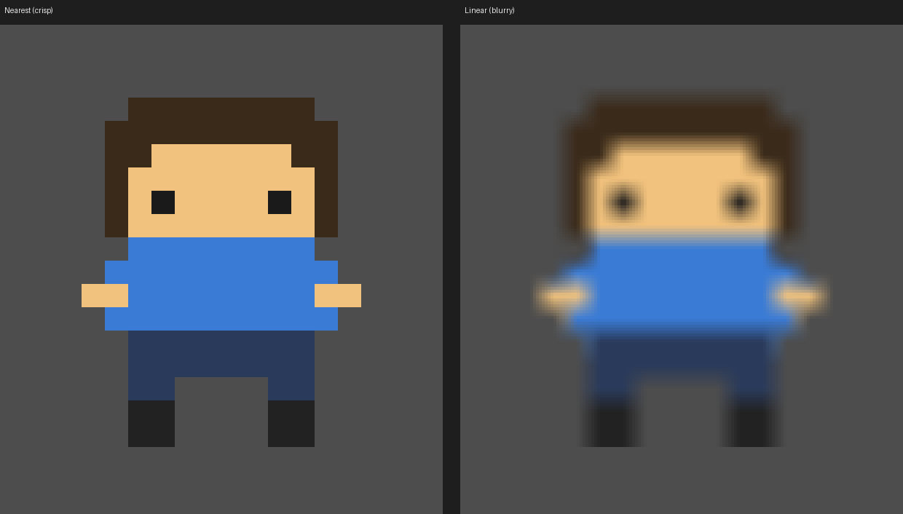
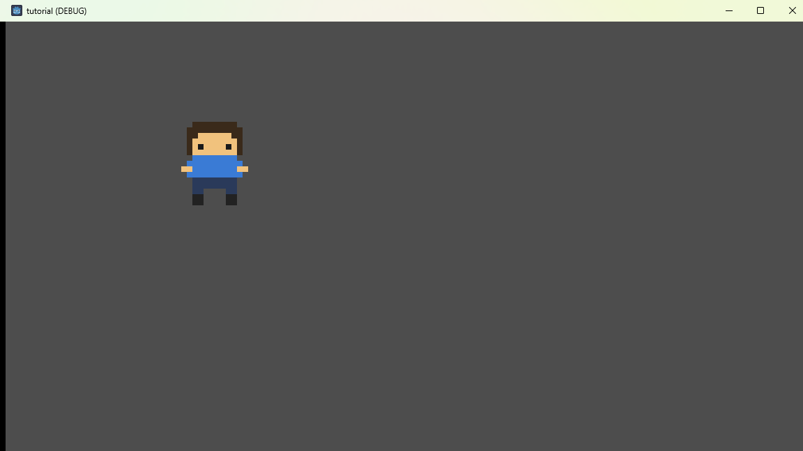

大家好，我是「山岚的运维笔记」。
前四篇我们一直在跟文字较劲，今天想换个活法——让屏幕里出现一个「人」。
我特意画了个 16×16 的小家伙，棕头发、蓝上衣。照着当年街机厅那些像素小人画的，歪是歪了点，但我挺得意。结果拖进引擎一跑，我盯住个屏幕呆咗三秒——佢糊咗，似隔住一层毛玻璃。
唔关张图事。系引擎默认将像素当照片咁「抹匀」咗。
素材得先住进项目文件夹，引擎才认。我新建了个 sprites 文件夹，把画好的图拖进去。等一两秒，`player.png` 旁边会多出一个 `.import` 文件，那个别手欠删，引擎靠它对账。
场景树里点根节点，右键「添加子节点」，搜 Sprite2D，加进来。

这里提前说个坑：Godot 4 里这节点叫 Sprite2D，不是老教程里的 Sprite。你照住 Godot 3 嘅教程搜，一样搜到，但嗰个系另一个东西，跟住做就会卡死，唔好怀疑自己。
选中它，右边检查器第一栏就是 Texture，点小箭头「加载」，选我们刚拖进来的图。啪一下，2D 视口里那个小人就冒出来了，场景树后面也挂上了缩略图。
唔使急住跑，我哋先将问题睇清楚。检查器里把 Scale 调成 8，让小人放大 8 倍。然后就糊了：
看出来没？边缘糊糊的，头发和脸的界线像被人用湿手指抹过。
原因不复杂。我们那张图只有 16×16 个像素，现在要显示成 128×128，多出来的像素得靠引擎「猜」。默认的猜法叫线性过滤，它把相邻两个像素的颜色按比例混一混，看起来平滑。对照片是好事，对像素画就是灾难，硬边全被揉软了。
像素画要的是另一种猜法，叫最近邻：别混，谁近就用谁的颜色。放大后就是一个一个硬方块，那才是复古味。

左边清爽，右边发虚，差嘅就系一个开关。
改法有两个。只改这一个精灵的话，选中 Sprite2D，检查器往下拉，找 CanvasItem 里的 Texture → Filter，改成 Nearest。
我建议改全局：菜单「项目」→「项目设置」，左边找 Rendering → Textures → Canvas Textures，把 Default Texture Filter 设成 Nearest。以后新加的图默认就是像素风，一劳永逸。
设完再跑一次：

边缘硬返，方块感返嚟喇，嗰个歪歪扭扭嘅小人终于有返当年嘅味道。
今天其实就记一句话：像素画要 Nearest，不要 Linear。剩下的挂图，点两下就会。
那个小人现在能站着了，但还不会动，也没地图管着它。下一篇我们给它铺一张真正的地图，讲坐标系和网格——推箱子的一切，都是从一个格子一个格子开始的。
像素小人企稳咗，点赞 + 顺手点个在看；关注「山岚的运维笔记」，后面接着畀佢装脑子。评论区吹水都得。
下一篇见。
（配套工程在 GitHub 的 Boxman 仓库 tutorial 分支，每篇一个进度 tag，搜 seancheng33/Boxman 就能找到。）